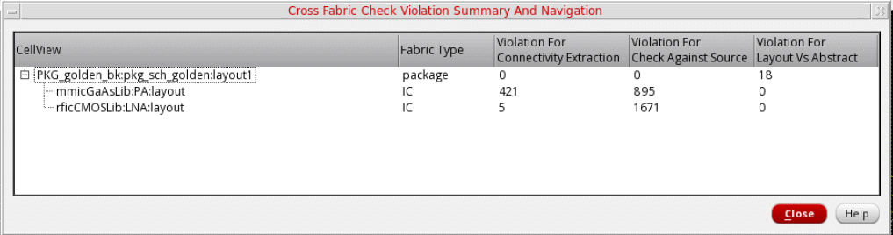
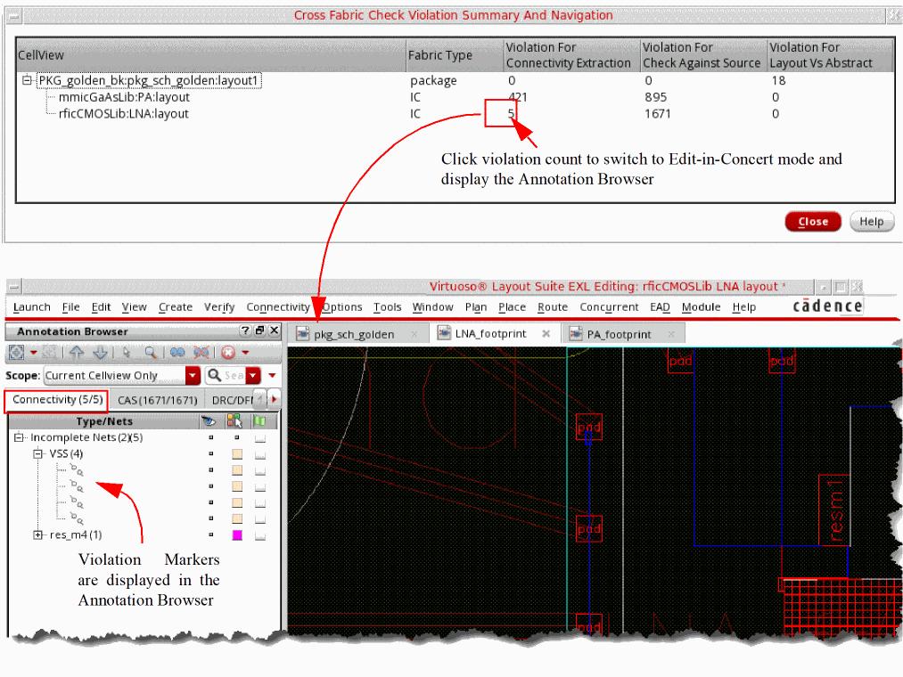
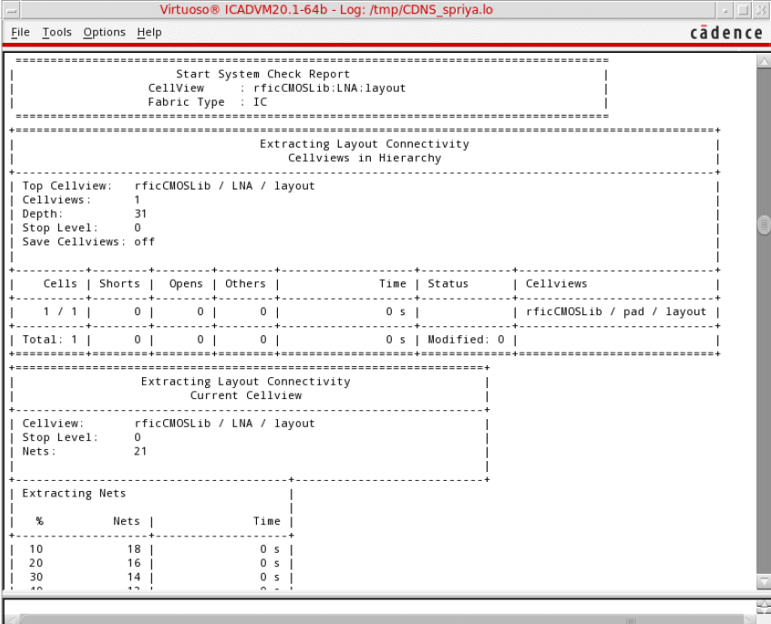

Performing Cross-Fabric Checks
-
Choose Module – Cross Fabric Check.
The design opens in Edit-in-Concert mode and cross-fabric checks are run. -
Violations are reported in the Cross Fabric Check Violation Summary and Navigation form and on the Connectivity and CAS tabs of Annotation Browser.
 -
Expand the package view in the CellView column to view a list of cellviews in which violations are reported. Fabric Type specifies the fabric type of the cellviews.
Cross-fabric check violations are listed under the following columns: -
Click a violation count to open the corresponding die in the foreground in Edit-in-Concert mode. The Annotation Browser is displayed with the corresponding tab open. For example, if you click the Violation for Connectivity Extraction count, the Connectivity tab is displayed.

A detailed system check report is displayed in the CIW.

Related Topic
Cross Fabric Check Violation Summary and Navigation Form
Return to top